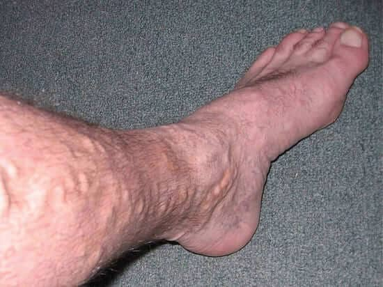
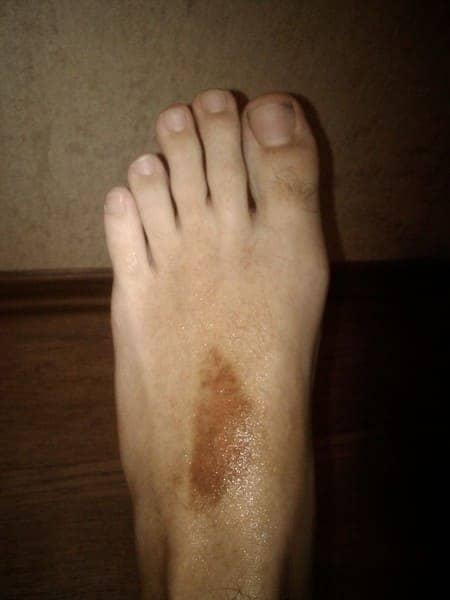
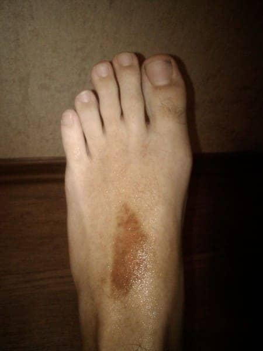

Metoda leczenia żylaków bez operacji i środków ludowej
Żylaki są silniejszi ode mnie, żylaki! Zawsze myślałem, że cierpią na to tylko kobiety. Walczyłem używając wszystkich metod dostępnych zwykłemu człowiekowi, nawet dotarłem do stołu operacyjnego. Ale coś innego uratowało mnie przed żylakami, o czym powiem wkrótce.
O mnie i żylakach

Przez całe życie pracowałem cholernie ciężko, póki zdrowie pozwalało. W wieku 40 lat udało mi się zarobić na mieszkanie jednopokojowe, samochód używany. Potem postanowiłem wejść na listę najbogatszych ludzi na świecie - zacząłem pracować dla siebie i zacząłem robi remont w mieszkaniach. Pracowałem, wszystko powoli szło pod górę, aż zacząłem mieć problemy z nogami.
Nogi zaczęli puchnąć, byli zmęczeni po kilku godzinach pracy i bołali po nocach. Zaczęły pojawiać się żyły i tak zwane gwiazdy. Kiedy znaliazłem szukać informacji na temat „co to jest?” w internecie znaliazłem odpowiedź „żylaki”. Ale nie dałem radę zrozumieć co mam zrobić. Piszą, że muszę lecieć do lekarza, a następnie ci, którzy byli u lekarza, mówią, że żadne leczenie nie pomaga. Zatrzymałem się na metodach ludowych.
Leczymy się w domu
Jak głupiec w ciągu kilku dni zużyłem cały miód, który miałem w domu. Co zrobiłem: smarowałem go na tkaninie i owijałem nogi na kilka godzin. Cała praca pszczół była rozmazana - zero wyniku. Przerzuciłęm się na biedną kapustę.
Zasada jest w przybliżeniu taka sama, konieczne było owinięcie nóg złamanymi liśćmi kapusty. Widocznie złamany jestem ja ponieważ doprowadzono mnie do takiego stanu, że zacząłem to robić. No cóż, siedzenie bezczynnie również nie było opcją, praca nie ruszała się do przodu z powodu tych pieprzonych żylaków, klienci byli niezadowoleni.
Zdając sobie sprawę, że kapusta nie jest dobrym pomysłem, zacząłem leżeć w wannie, dodając kilka kropli olejku eterycznego. Skąd go wziąłem - nie wiem, sam Bóg z nieba mi go dał. A gdzieś indziej na forum przeczytałem, że żylaki bardzo boją się cytryny. Kilka minut później wszystkie cytryny w najbliższym sklepie były kupione, które następnie spotkały ten sam los co kapusta.
Po prawie DWÓCH MIESIĄCACH nadużywania produktów, zdałem sobie sprawę, że nie jest mi lepiej, tylko gorzej. Musiałem odrzucić wszystkie zamówienia w pracy, jakoś dokończyłem jedno i tymczasowo przykryłem moją działałność. Musiałem pilnie zrobić coś nogami.
Pierwszą rzeczą, która mnie przeraziła, gdy spojrzałem na moje nogi, były żyły, które wyskakiwały jak chwasty. Druga to ciemne plamy, których wcześniej nie widziałem. Odrzucając wszyskie myśli o tym, że lekarze nie pomagają, pokuśtykałem do przychodni.
 
Wyleczony, cóż, prawie
Pani w okienku skierowała mnie do flebologa. Ten przeprowadził badanie, zobaczył moje żyły, wszytstko sprawdził i zaczął mówić. Zaczął od tego, co na mnie czeka w przyszłości, jeśli nie zacznę szybko leczyć moje nogi - zakrzepica, która może prowadzić do naruszenia dopływu krwi do mózgu lub serca i stanowić zagrożenie dla życia. A najbardziej nieszkodliwą rzeczą, która może się zdarzyć, są owrzodzenia nóg.
Aby nie umrzeć nagle z powodu żylaków, zgodziłem się na operację, przed którą musiałem przejść badanie. Wkrótce dowiedziałem się, że nadaję się na operację, i ustaliłem datę, kiedy będą mnie kroili jak świnię na grillu.
Oczywiście wszystko to jest żartem. Operacja była prawie bezbolesna, wykonywana ze znieczuleniem. Ale okres rehabilitacji jest gorszy niż operacja.

Przez miesiąc siedziałem bez pracy z ogolonymi nogami. Piłem dużo tabletek przepisanych mi przez lekarza i nosiłem dzianinową bieliznę kompresyjną - pończochy. Musiałem też okresowo odwiedzać lekarza, on sprawdzał, czy wszystko idzie zgodnie z planem. Pod koniec okresu rehabilitacji lekarz zbombardował mnie zaleceniami i zakazami.
Cześć żylaki
I w końcu wróciłem do pracy. Nic nie bolało, czasami pojawiały się dziwne odczucia w nogach, co nie jest bardzo dziwne, jednak jestem po operacji. Pracowałem przez około miesiąc, sekunda i znowu ciężkość w nogach. Nie marnowałem produktów, a natychmiast pobiegłem do lekarza.
Zaintrygowała mnie także twarz lekarza. Mruknął coś i zapytał, czy dostrzegałem jego zalecen. Zapisał na kartce kilka leków i zaproponował bardziej nowoczesną operację laserową. Miałem kilka pytań: dlaczego nie zrobiono tego od razu? Tym razem operacja na pewno pomoże?
Natychmiast przypomniałem sobie słowa ludzi na forum, wszystkie ich wypowiedzi o lekarzach. Krótko mówiąc, postanowiłem poszukać innej metody leczenia.
Ręka pomocy
Ledwo stojąc na nogach kontynuowałem pracę, musiałem jakoś zarabiać. Kupiłem leki przepisane przez lekarza, nie było od nich żadnej ułgi, tylko było trochę więcej spokoju.
Jakoś zadzwonił telefon. Podnoszę telefon - Pani. Kolejne zamówienie, remont w sypialni. Przyjechałem do mieszkaniu, wszystko obgadaliśmy, kupiłem materiał i rozpocząłem pracę. Nogi bolały mnie bardziej niż kiedykolwiek, ale potrzebowałem pieniędzy.
Pracowałem z częstymi przerwami, podczas których Pani robiła dla mnie herbatę i siadała ze mną przy stole, aby omówić nasze grzeszne życie. Opowiedziała, że wcześniej też cierpiała na żylaki, dopóki nie zaczęła kuracji z . Od razu zacząłem ją dopytywać co i jak. Po powrocie do domu dowiedziałem się, gdzie zamówić i od razu złożyłem zamówienie.
Kilka dni później dostałem paczkę z . Cholera, nawet samo opakowanie mówiło, że problem jest kobiecy. Ale jak mówią, na wojnie wszystkie środki są dobre, więc przeczytałem instrukcje i rozpocząłem kurs.

Niesamowite
Niesamowicie, ale w ciągu kilku dni praca stała się dla mnie łatwiejsza! Podzieliłem się tym wszystkim z tą samą Panią, która odpowiedziała tylko: „Powiedziałam, że ten środek działa”. Wszystkie leki przepisane przez lekarza przestały przynosić spokój i trafiły do kosza.
Bóle nóg minęły po tygodniu, ale ciężko było wytrzymać przez długi czas. Mimo to cieszyłem się. Ale wtedy cały kurs był jeszcze przede mną.
Zakończyłem remont u tej Pani, kiedy już pewnie stałem na nogach. Podziękował jej najlepiej jak potrafiłem, wziąłem mniej pieniędzy za swoją pracę i poszedłem do innego obiektu.
Kolejna praca była poważniejsza, konieczne było zburzenie kilku ścian i wzniesienie nowych. Pędziłem tam jak szalony przez dwa tygodnie bez wolnego. I chcę zauważyć, że nogi wcale nie bolały. Byli zmęczeni, ale nie jak u osoby z żylakami. Wszystko stało się jak wcześniej. Ja pracuję - nogi cierpią.
Gwiazdy żylne spadły z moich stóp, prawie zniknęły. Po kursie porównywałbym nogi z tymi na okładce czasopism. Po kilku miesiącach ciężkiej pracy mogę powiedzieć, że żylaki zostały pokonane. Nie wróciły jak po operacji.

Drogie Pani i Panowie cierpiące na żylaki, macie ogromne szczęście, że natknęliście się na moją historię. Oto link do środka, możecie śmiało się leczyć.
9874 polubień, 7561 odpowiedzi
Marta Nowak
opublikowane
Mój mąż przykładał sobie ziemniaki na nofi, mówił, że trochę pomaga. Ale nie widzę żadnego rezultatu, żyły wciąż się wybrzuszają. Zamówię dla niego , dzięki za historię :)
Julia Perla
opublikowane
To nie jest odosobniony przypadek, gdy po operacji ponownie pojawiają się żylaki. Mam tę samą historię, robiłem operację laserową. Już po sześciu miesięcach wszystko przywróciło, nie wiem, co robić. Cała nadzieja :(
Beata Kalis
opublikowane
Raz spotkałem moją koleżankę. Pogadaliśmy, powiedziała mi, że prawie umarła latem. 2 lata temu zrobiła operację żył nóg. Była zadowolona. Pojechałam z dziećmi na działkę, grała z nimi w piłkę nożną, a jej żyła pękła. Ledwo zdążyli ją powieść do szpitala. Poradziła mi, aby próbowałam unikać operacji, dlatego że późnej jest wiele ograniczeń
Marta Towarowska
opublikowane
Masakra…
Kamila Woźniak
opublikowane
Leczyłem żylaki , środek przetestowany na mojej cioci :) Środek usunął ból, usunął wystające żyły i przerażające gwiazdy
Adam Gotesarek
opublikowane
W temacie żylaków przeczytałem sporo literatury i postanowiłem spróbować ocet jabłkowy. Ulepszenia były niewielkie, nogi również puchły i bolały. Zapisałem się na wizytę do lekarza, dzięki Bogu trafiłem na dobrego. Zalecał mi kurs . Leczenie zakończyło się sukcesem. Nie miałem żadnych operacji
Julia Mórawska
opublikowane
Miałam tylko gwiazdki, a pomógł je usunąć
Ela Sanowska
opublikowane
Po ciąży pojawiły się żylaki. Bolały mnie nogi, ale bardziej martwiłam się o wygląd, było to obrzydliwe. W panice zaczęłam próbować wszystkich maści z apteki, nic nie pomogło. Dzięki autorowi za to, że opwiedział o , nigdy nie byłabym w stanie znaleźć tego środku w moim życiu, gdyby nie Twoja historia
Andrzej Pepin
opublikowane
Miałem problemy z żyłami na nogach. Nie mogłem nosić wąskich butów, bolały mi nogi i pojawił się obrzęk. Flebolog doradził . Miesiąc później stało się znacznie lepiej. Żel pomógł i wzmocnił ścianki naczyń krwionośnych. Ale nie zapominam o pończochach kompresyjnych i przejrzałem swoją dietę. Bądźcie zdrowi.
Mariusz Nowakowski
opublikowane
Skleroterapia nie pomogła, setki różnych metod ludowych również wypróbowałem. Mam dziedziczne żylaki. Powiedz mi czy pomoże?
Kamil Machiński
opublikowane
Bardzo prawdopodobne. Gdzieś na forum przeczytałem, jak jedna kobieta wyleczyła trzeci etap żylaków za pomocą tego środka.
Helena Zilova
opublikowane
Moja koleżanka z pracy z żylakami przez dwa lata się męczyła, a potem gdzieś nagle zniknęła. Postanowiłam zapytać, powiedziała że jej pomogł. Mam tylko kilka gwiazdek na jednej nodze, nie wiedziałam, jak je usunąć. Spróbuję jeszcze z
Michalina Kralowicz
opublikowane
Chcę dodać jeszcze kilka słów o operacji. Mój mąż robił. Na jednej nodze jest nadal ok, a druga stała się przerażająca, jak po wojnie atomowej …
Agnieszka Bradacowska
opublikowane
, i jeszcze raz ! Zapomnij o operacjach, środkach ludowych itp. Przeszłam przez to wszystko, żylaki zawsze wracały w jeszcze większym stopniu. Jak tylko wzięłam kurs z , wszystko przeszło od razu